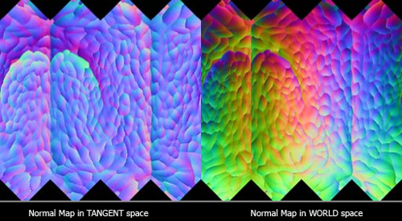

3.6
BaseColor는 sRGB, Normal Map은 Raw로
컬러스페이스와 텍스처 타입별 활용법의 이해
sRGB vs Linear (Raw) 이해

sRGB (감마 2.2) - 인간의 시각 인지에 최적화된 비선형 컬러스페이스
Linear (Raw) - 빛의 물리적 속성에 맞는 선형 컬러스페이스
텍스처 유형 분류
색상 텍스처 (sRGB)
- • BaseColor / Albedo
- • Diffuse
- • Specular Color
- • Emission
데이터 텍스처 (Raw)
- • Normal Map
- • Roughness
- • Metallic
- • Displacement
왜 다른 컬러스페이스가 필요한가?
BaseColor = sRGB
아티스트가 보는 그대로 저장하기 위함. 감마 커브가 적용된 이미지는 모니터에서 자연스럽게 보임.
Normal Map = Raw (Linear)
벡터 데이터 (X,Y,Z 방향값)를 정확히 저장하기 위함. 감마 변환시 수치가 왜곡되어 라이팅 계산이 부정확해짐.

실수 사례와 대응법
잘못된 사례
Normal Map을 sRGB로 로드시 벡터 방향 왜곡으로 부정확한 라이팅 발생
• 비정상적인 하이라이트
• 이상한 그림자 형성
• 표면 디테일 소실
해결 방법
텍스처 임포트 시 적절한 컬러스페이스 설정 확인
• DCC 도구 컬러스페이스 설정 확인
• 렌더러의 텍스처 컬러스페이스 확인
• 텍스처 메타데이터 설정
실무 워크플로우 팁
USD 파이프라인에서
UsdUVTexture의 sourceColorSpace 속성으로 텍스처별 컬러스페이스 명시적 설정 가능
네이밍 컨벤션
파일명에 _color, _normal 등의 접미사 사용으로 자동화 파이프라인 구축 가능
OCIO 설정
OpenColorIO 설정으로 전체 파이프라인에서 일관된 컬러스페이스 관리 구현
Computer Graphics & Data Management Course